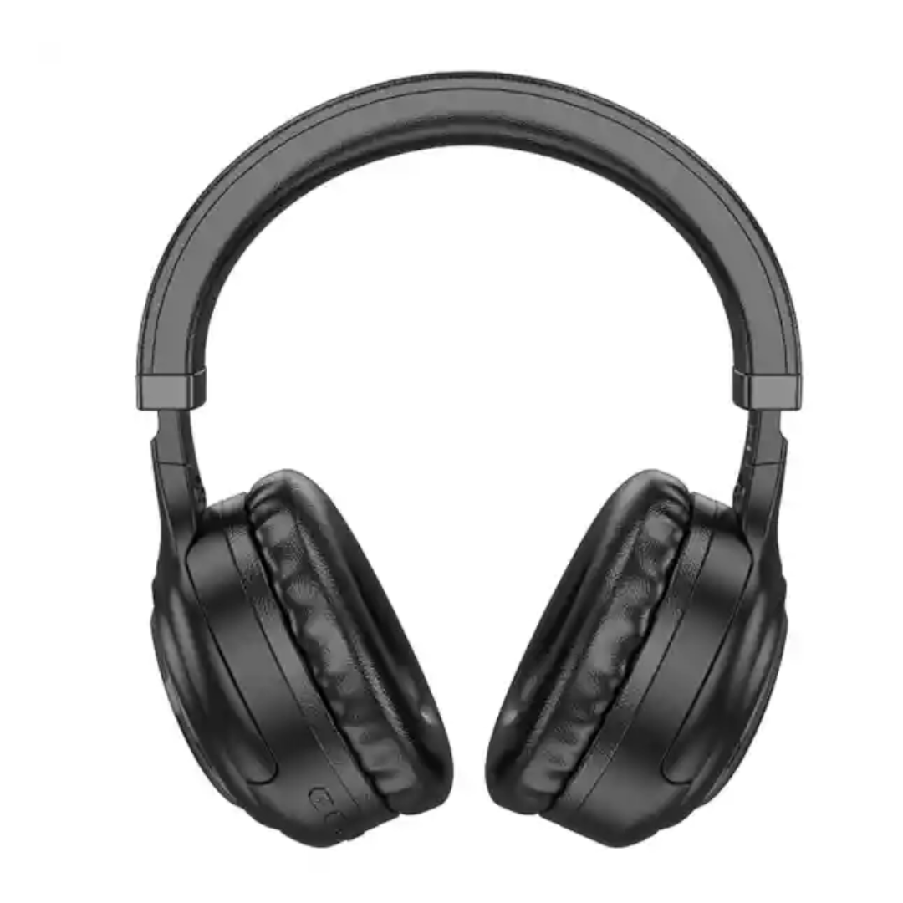
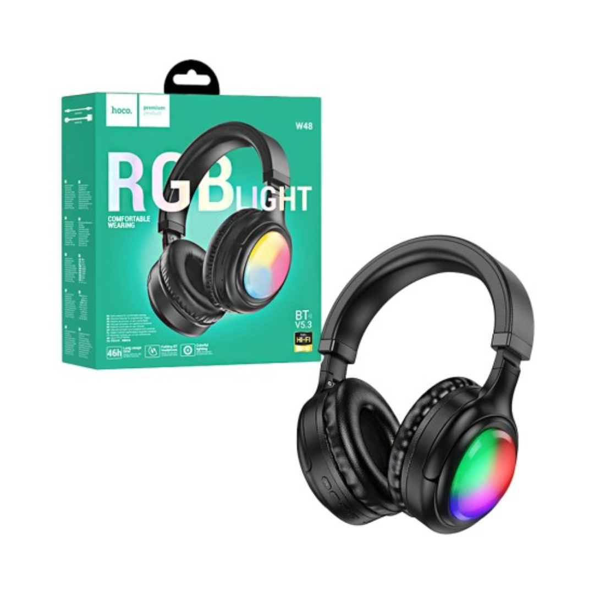
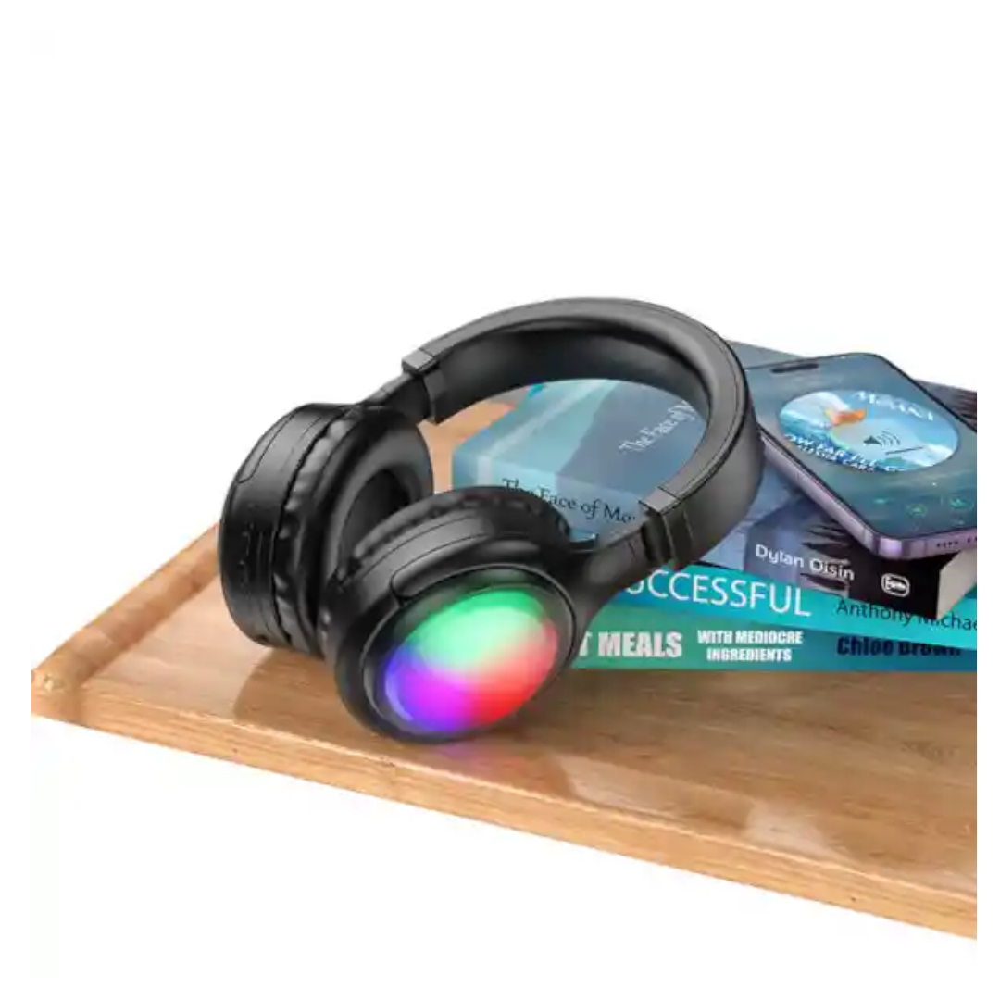
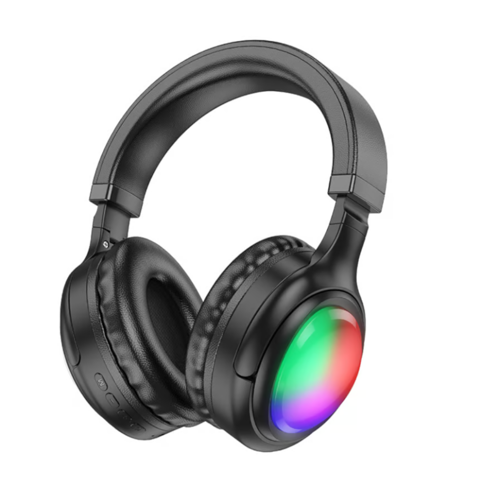

Auriculares Bluetooth Inalámbricos HOCO W48 Audífonos Diadema RGB
S/ 59.90
Disponibilidad: En stock
SKU: HOCO W48 RGB
DESCRIPCIÓN
Audifonos Hoco W48 Confort Rgb Diadema Headset Bt 5.3
Estos auriculares inalámbricos, destacan por su diseño llamativo y su sonido equilibrado. Ofrecen comodidad gracias a su diadema ajustable y almohadillas acolchadas, lo que permite un uso prolongado sin molestias.
Los controles integrados permiten gestionar la música y las llamadas con facilidad, mientras que el micrófono incorporado facilita las conversaciones.
Cuentan con tecnología inalámbrica para transmitir audio desde dispositivos como teléfonos o computadoras, con una batería que ofrece hasta 8 horas de reproducción.
Especificaciones :
- verisión de BT: v5.3. Chip: AC7006F4.
- unidad de altavoz: 40mm.
- Capacidad de la batería: 400mAh.
- Entrada de carga: DC5V, Type-C.
- Tiempo de carga: 2 horas.
- Tiempo de conversación/música: 46 horas (volumen al 80%, luces apagadas), 8 horas (volumen al 80%, luces encendidas). Tiempo en espera: 200 horas.
- Iluminación ambiental colorida en las copas de los auriculares. Ligeros, con almohadillas suaves, copas plegables y diadema ajustable.
- Soporta cambio de canciones, reproducción/pausa de canciones, ajuste de volumen.
- Soporta modos de reproducción BT, tarjeta TF, AUX.
- Con micrófono.
- Accesorios: cable de carga Type-C × 1, cable AUX × 1.
- Emitimos Boleta de Venta o Factura
- Vendido y Despachado por Toda Tecnologia Perú
El paquete incluye :
1 Audifono en Caja Sellado
1 Cable de Carga